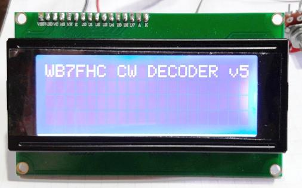
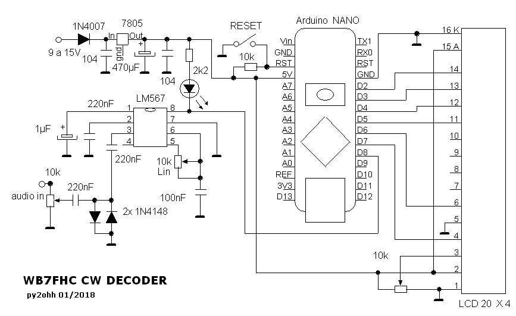
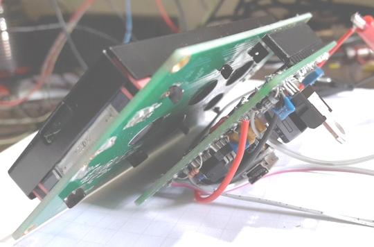
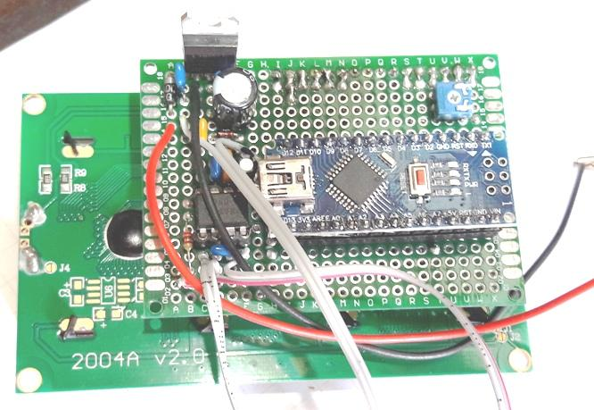
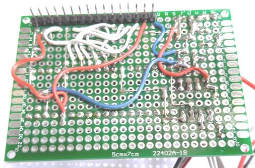
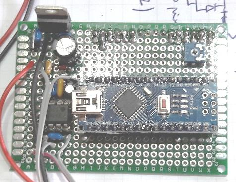
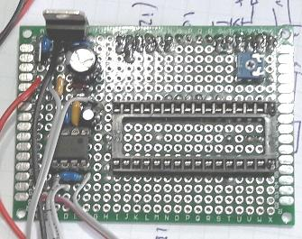

WB7FHC - ARDUINO CW DECODER 1

Este decodificador é o melhor que já montei.
Esta na versão original.
Tem poucos componentes e é muito facil de montar.
Esquema

O sketch pode ser obtido a partir deste link :
CW decoder
WB7FHC 1.1
Existem vários videos no youtube mostrando o desempenho deste
decodificador.
A montagem fizemos em uma placa padrão de dupla face comprada no
ebay por 1U$ cada 3 peças, o arduino nano, o display e o lm567
estão com soquetes já os potenciometros, led e fios de
alimentação estão soldados diretamente na placa.
Não fizemos um estudo de layout e montamos de uma forma rapida,
em poucas horas de trabalho estava pronto.

A montagem por sandwiche é minha preferida.

O 7805 esta montado na placa.

A parte inferior da placa ficou um pouco bagunçada, mas é
uma forma rapida e eficiente de montagem.

Foto da parte superior.

Parte superior sem o arduino.
Duvidas, escarecimentos, ajuda py2ohhARROBAyahoo.com.br (arroba=@).
Versão alemã deste decoder com arquivos GERBER para
confecção de PCB
http://gemander.org/2015/03/31/cw-decoder-nach-wb7fhc/
Arquivos gerber deste link para PCB
http://gemander.org/wp-content/uploads/2015/03/cw-decoder.zip
73 de py2ohh miguel